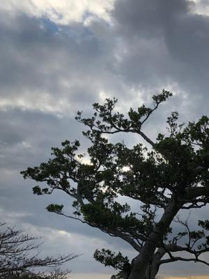
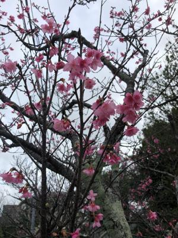

うるがいの話 ある日
最新: 社会主義と共産主義【うるがいの話 ある日】とは 一日だけのプログです
『うるがいの話』の最新一日だけのプログで、通信料が少なく経済的だ。カニの画像をクリックすると全ての日付が載る『うるがいの話』サイトを表示します
|
|
【うるがいの話】 うるがい(ｳﾙｶﾞｲ urugai)とは、『もずくがに』の名前でとても大きくなります。 |
|---|---|
|
|
【カミマヤーの話】 猫のことを方言でマヤーといいます。カミマヤー（kamimayaa）とは、神の猫のことです。 |
|
【タナガーの話】 たながー（ﾀﾅｶﾞｰtanagaa）とは手長えびのことで、何種類かあり大きいのは車 エビぐらいになります。 |

|
【ぶながぁの話】 ぶながー(bunagaa)とは、赤い髪の毛、赤い身体、そして身長は１ｍ２０ｃｍ ぐらい、川の蟹を食べているの目撃された。場所は沖縄県国頭郡大宜味村のと ある村僕の隣近所に住んでいる爺さんから、聞いた話です。 |
|
|
【ギーマの話】 ギーマ(giima)とは、山原の里山に咲くスズランに似た、 花を付けます。実は食べられます、 気が付くと口の周りが紫になっています。 |
2022年01月27日 (木）社会主義と共産主義
15:57

『ジュリアン・アサンジ自伝』の本のなかで、書かれていたソ連国内で出版で
きず，国外で発表された「煉獄のなかで」（１９７４年邦訳）を読んでいる。
スターリンをコケにしている、どおりで出版されない筈だ。読んでて疑問に思
った。
１共産主義と社会主義の違いは
しかし旧ソ連が崩壊すると、共産主義と社会主義の違いは曖昧となり、現代で
はほぼ同じような意味として捉えられている部分もあります。
２ロシアと中国の違い
ある意味では、中国共産党は民族主義政党であり、ソビエト共産党は国際主義
政党である。共産党のない中国の存在を想像することはできるが、共産党のな
いソ連の存在を想像することはできません。
３ん？、共産党って
共産党（きょうさんとう） の意味
マルクスの唱えた学説を信条とし、共産主義社会の実現を目標とする政党。
→ソビエト共産党 →中国共産党
少し分かったような気がする。

副業の動画編集研修の申し込み締め切り日は明日が期限だったが、定員４０名
に達したので午前中に締め切られた。ホー、人気がある。
１５時５２分 ビットコインの総資産 ￥１２、００７↓